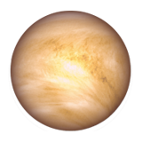

Venus

The second planet from the sun,
Venus is terribly hot, even hotter than Mercury.
The atmosphere is toxic.
The pressure at the surface would crush and kill you.
Scientists describe Venus’
situation as a runaway greenhouse effect.
Its size and structure
are similar to Earth,
Venus' thick, toxic atmosphere traps heat in a runaway "greenhouse effect.
" Oddly, Venus spins slowly in the
opposite direction of most planets.
The Greeks believed Venus was two different
objects — one in the morning sky and
another in the evening.
Because it is often brighter
than any other object in the
sky — except for the sun
and moon — Venus has generated
many UFO reports.
Diameter: 7,521 miles (12,104 km)
Orbit: 225 Earth days
Day: 241 Earth days